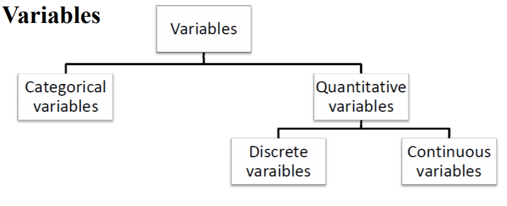
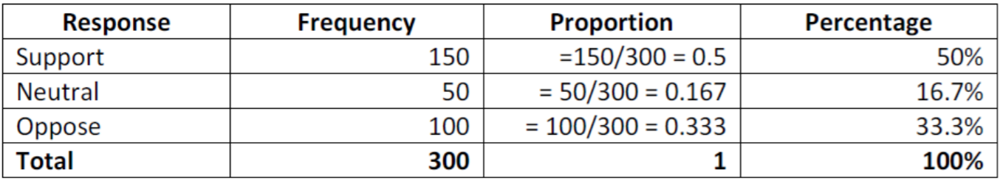
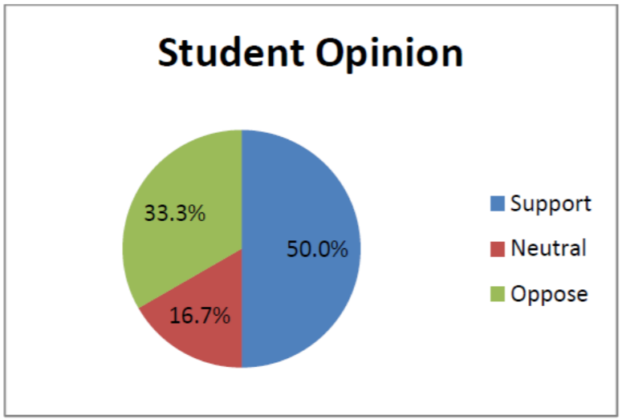
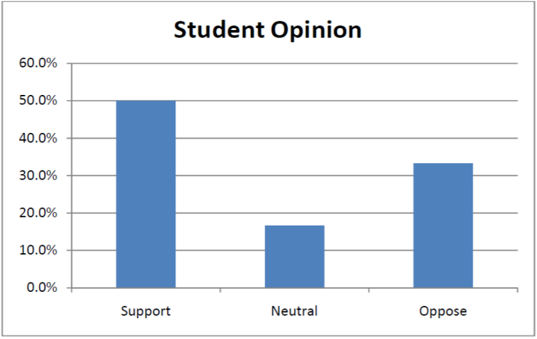

STAT 241 Jan 3, 2018 (Chapter 1)
Statistics is...
Science involving the design of studies, data collection, summarizing and analyzing data, interpreting resulting and drawing conclusions
Population and Samples
- Population: all subjects of interest in a particular study
- Sample: subset of the population
Parameter and Statistics
- Parameter: a description of measure of a population
- Statistic: a descriptive measure of a sample
Census and Sample Survey
- Census: collecting data for the entire population
- Sample survey: collection data for a sample
Classification of variables
- A variable can be classified as categorical if each observation belongs to one of a set of categories
- A variable is called quantitative if observations on it take numerical values that represent different magnitudes of the variable
- Categorical or Quantitative?
- Number of siblings in family
- County of residence
- Distance (in km) of commute to school
- Blood type
- A quantitative variable is discrete if its possile values form a set of separate numbers - such as 0,1,2,3...
- A quantitative variable is continuous if its possible values form an interval
- Continuous or Discrete?
- Length of time to take a test
- Number of people waiting in line
- Number of speeding tickets last year
- Dog's weight

Descriptive vs Inferential Stats
- Descriptive - refers to methods for summarizing data = graphs and numbers
- Inferential - refers to methods of making decisions or predictions about a population based on data obtained from a sample of that population
Summarizing data using tables and graphs
- Frequency Table - listing of possible values for a variable, together with the number of observations and/or relative frequencies for each value
- eg: A campus press polled a sample of 300 undergrads in order to study the attitude towards a proposed change in on campus housing regulations

- Pie Chart - Summarizes categorical vars, sizes of slice proportional to percentage of category, self-explanatory...

- Bar Graphs - Vertical bar for each category where height of each bar represents counts (frequencies) or percentages (relative frequencies)

Main Page